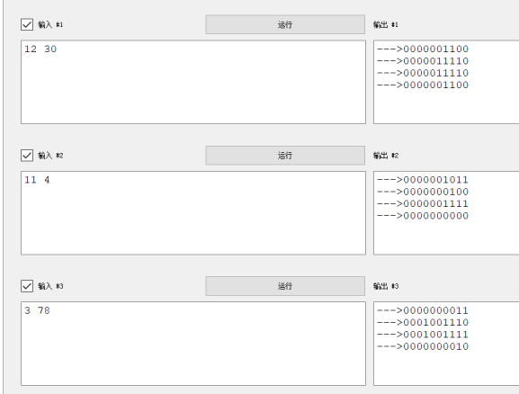

常见的位运算为：与、或、异或这三种。
| 运算 | 运算符、数学符号表示 | 解释 |
|---|---|---|
| 与 | &、and |
同1出1 |
| 或 | \|、or |
有1出1 |
| 异或 | ^、$\bigoplus$、xor |
不同出1 |
这一块的内容比较散乱，以海量刷题为首要学习方向，同时需要收集一些常用结论。
题意：给定长度为 $N$ 的序列 $A$ ，计算 $\displaystyle \sum_{i=1}^{N-1}\sum_{j=i+1}^{N}(A_i \oplus A_j)$ 。
单纯位运算。拆位，对于每一位而言，只有 $0$ 和 $1$ 相互组合才能产生贡献，所以每一位的贡献即为 $0$ 和 $1$ 的乘积： $cnt_0 \cdot cnt_1 \cdot 2^i$ 。
坑：别忘了取模。
signed main() {
int n;
cin >> n;
vector<int> bit(60);
for (int i = 1; i <= n; i++) {
int x;
cin >> x;
bitset<60> val = x;
for (int j = 0; j < 60; j++) {
bit[j] += val[j];
}
}
Z ans;
for (int i = 0; i < 60; i++) {
ans += (Z)bit[i] * (Z)(n - bit[i]) * (Z)(1LL << i);
}
cout << ans << endl;
}
题意：给定长度为 $N$ 的序列 $A$ ，在 $[1,K]$ 范围内取一个 $X$ ，使得 $\displaystyle \sum_{i=1}^{N}(A_i \oplus X)$ 最大。
单纯位运算。和上一题差不多的思路，略难一点。首先每一位的贡献还是 $0$ 和 $1$ 的乘积，从高位到低位遍历，判断 $X$ 的这一位为 $0$ 合适还是为 $1$ 合适（即判断 $cnt_1$ 是否大于 $cnt_0$ ）；若为 $1$ 合适，判断是否会超过 $K$ 的限制。
坑：数据比较弱，一开始多加了个排序的贪心，结果就WA了一个点。
signed main() {
int n, k;
cin >> n >> k;
vector<int> bit(40);
for (int i = 1; i <= n; i++) {
int x;
cin >> x;
bitset<40> val = x;
for (int j = 0; j < 40; j++) {
bit[j] += val[j];
}
}
int X = 0, ans = 0;
for (int i = 39; i >= 0; i--) {
if (n - bit[i] > bit[i] && X + (1LL << i) <= k) {
X += (1LL << i);
ans += (n - bit[i]) * (1LL << i);
} else {
ans += bit[i] * (1LL << i);
}
}
cout << ans << endl;
}
题意：给定长度为 $N$ 的序列 $A$ ，求解区间 $[l,r]$ 的数量，使得 $a_l,a_{l+1},\dots a_{r-1},a_r$ 的异或和等于和。
位运算+尺取+暴力，也有双指针、二分解。由于位运算满足 $x\oplus x\oplus x=0$ ，符合尺取性质，所以直接暴力即可。
如果用二分或者双指针解，可能需要用到：如果两个元素的某一位均为 $1$ ，那么其异或和一定小于和，所以我们需要寻找这样的一个区间，对于每一位均满足这一位为 $1$ 的元素数量不超过一个。
signed main() {
int n;
cin >> n;
vector<int> a(n + 1);
for (int i = 1; i <= n; i++) {
cin >> a[i];
}
int ans = 0, val = 0;
for (int l = 1, r = 0; l <= n; l++) {
while (r + 1 <= n && (val ^ a[r + 1]) == val + a[r + 1]) {
r++;
val ^= a[r];
}
ans += r - l + 1;
val ^= a[l];
}
cout << ans << endl;
}
相当不错的题目，强思维轻代码。首先很显然一点是这棵树中为 $1$ 的节点数量会越来越少，其实推广下可以发现第 $i$ 轮根节点的值就是深度为 $i$ 的节点的初始值的异或和，整棵树的操作过程可以抽象的看成海浪上岸的过程。
随后理性认知，对于 $2^n$ 种情况，其实就是等概率全随机的情况，每个位置均有 $2^{n-1}$ 种情况为 $1$，该值一定会被计入总答案；随后，对于每一个非叶子节点 $i$，其子节点又会至多对其进行 $h_i$ 次更新操作（这里的 $h_i$ 为 $i$ 到其子树中最深的叶子节点的距离），我们尝试计算这一部分的贡献——由于等概率全随机，这些点就会有 $(h_i-1)\cdot 2^{n-1}$ 种情况为 $1$。
综合上述情况，总结答案即为 $2^{n-1}\cdot \sum h_i$，所以只需要跑一遍树上搜索即可得到答案。
__builtin_clz 模板。
典题。由于 $x$ 和 $x+3$ 的初始奇偶性不相同，而按照结论，操作后奇偶性依旧不变，故只需要判断操作后 $x$ 和 $y$ 的奇偶性即可。
一个正整数 $x$ 异或、加上另一个正整数 $y$ 后奇偶性不发生变化：$a+b\equiv a\oplus b(\bmod2)$ 。
~~典题不会，原地坠毁！~~
结论1：$k$ 合法当且仅当
__builtin_popcountll(n) <= k && k <= n，显然。结论2：$2^{k+1}=2\cdot2^{k}$ ，所以我们可以将二进制位看作是数组，然后从高位向低位推，一个高位等于两个低位，直到数组之和恰好等于 $k$ ，随后依次输出即可。举例说明，${ 1,0,0,1} \rightarrow { 0,2,0,1} \rightarrow { 0,1,2,1}$ ，即答案为 $0$ 个 $2^3$ 、$1$ 个 $2^2$ 、……。
代码：
```c signed main() { int n, k; cin >> n >> k;
int cnt = __builtin_popcountll(n); if (k < cnt || n < k) { cout << "NO\n"; return 0; } cout << "YES\n"; vector<int> num; while (n) { num.push_back(n % 2); n /= 2; } for (int i = num.size() - 1; i > 0; i--) { int p = min(k - cnt, num[i]); num[i] -= p; num[i - 1] += 2 * p; cnt += p; } for (int i = 0; i < num.size(); i++) { for (int j = 1; j <= num[i]; j++) { cout << (1LL << i) << " "; } }} ```
个人感觉这题有两个解题思路。
其一是，我们需要发现题目中给定的操作只会将 $x$ 二进制模式下的全部 $1$ 移动到 $y$ 的对应位置上。这个规律可以打表得到，如下图：
bool Solve() {
int A, B;
cin >> A >> B;
bitset<10> x = A;
bitset<10> y = B;
_(x);
_(y);
_(x|y);
_(x&y);
return 0;
}

这有什么用呢？这说明 $1$ 是可以无损移动的，那么我们尽可能让 $a_i$ 的大小差距拉开（大的尽可能大、小的尽可能小），就可以使得所求最大。
第二个做法更不容易想到，如下。首先，位运算有个公式：$x+y=x|y+x\&y$ 。根据这个公式我们可以知道，题目中定义的操作不会影响 $\displaystyle\sum_{i=1}^n a_i$ 的值。
那么，问题在于 $\displaystyle\sum_{i=1}^n a_i$ 和我们要求解的式子有什么关系呢……显然，根据高中数学，我们有公式 $\displaystyle\sum_{i=1}^n a_i^2 =(\sum_{i=1}^n a_i)^2-2\cdot \sum_{i=1}^{n}\sum_{j=i+1}^{n}a_ia_j$ ，此时已知操作不会改变 $\displaystyle(\sum_{i=1}^n a_i)^2$ 的值，所以要使得 $\displaystyle\sum_{i=1}^n a_i^2$ 最大，即要让 $\displaystyle\sum_{i=1}^{n}\sum_{j=i+1}^{n}a_ia_j$ 最小。
现在的问题变成了怎样分配 $a_i$ ，使得 $\displaystyle\sum_{i=1}^{n}\sum_{j=i+1}^{n}a_ia_j$ 最小，我们发现，当 $0$ 的数量最多时，乘积也有最多的 $0$ 。所以，我们需要让 $a_i$ 的大小差距拉开。
超级好题
巧妙的使用了异或“半加”的性质解题。
有意思的位运算题。
非常考验位运算思维的一题，不难，分数比较虚高。